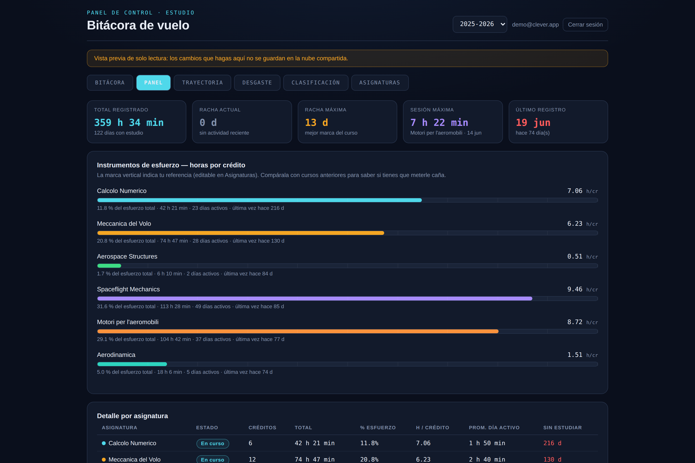
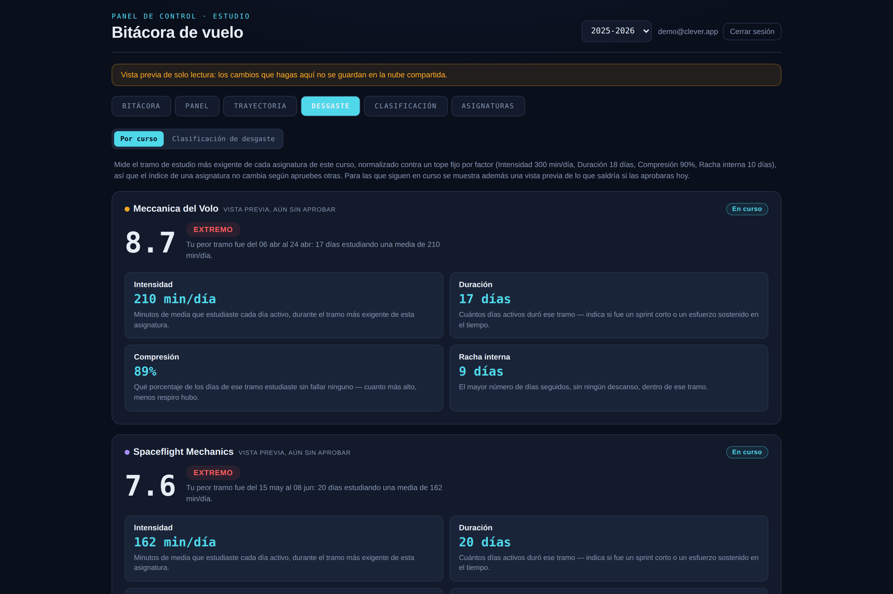

No sabes cuánto esfuerzo real le has dedicado a cada asignatura.
Clever sí.
Registra tus minutos de estudio día a día y deja de guiarte por impresiones. Clever los convierte en datos: horas por crédito, racha de días seguidos, sesión máxima — el mapa real de dónde se ha ido tu esfuerzo este curso.
Make it simple, make it Clever.

Tres formas de ver tu esfuerzo, de verdad
El índice de desgaste: qué asignaturas te exigen más, medido — no imaginado
Todas las carreras tienen su leyenda: "esa asignatura es un hueso", "esa es tranquila". Clever ignora la fama y calcula un índice de desgaste a partir de tus minutos reales — el tramo de estudio más duro que has tenido en cada asignatura, medido en cuatro factores objetivos. Un número del 0 al 10, igual para todo el mundo, que no cambia según apruebes otras asignaturas.

Empieza a medir tu esfuerzo real
Gratis. Funciona para cualquier institución que puntúe por créditos: universidad, máster o FP.
Empieza gratis